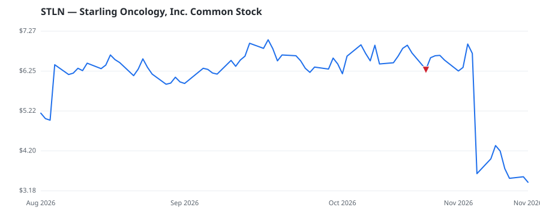

bullish · bearish · n/a — dots: price>SMA10 · SMA10>SMA50 · SMA50>SMA200 · up>down volume (20d)
Health Care Equipment & Services · small cap

Starling Oncology Inc provides oncology care services in community settings. Its services include cancer diagnosis and treatment, clinical trials, transfusion services, and other oncology care delivery models for patients. SERVICES-OFFICES & CLINICS OF DOCTORS OF MEDICINE · website
| Revenue | $502.7M | Net income | $-60.6M |
|---|---|---|---|
| Operating income | $-36.1M | Diluted EPS | $-0.54 |
| Assets | $164.7M | Equity | $-15.7M |